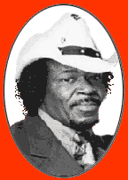

Eddy "King" Milton

Эдди "Кинг" Милтон прожил очень длинную и плодотворную жизнь в блюзе. Это удается далеко не всем, и поэтому нужно отдать ему должное как очень талантливому музыканту и своеобразному человеку. Можно вспомнить 1957 год, когда он играл в клубах на западе Чикаго с Little Mac Simmons и Detroit Jr., или сидел в клубах в южной части города с Мадди Уотерсом или Howlin’ Wolf. Ему посчастливилось, что еще на заре своей карьеры он соприкоснулся с такими легендарными именами. Но это было еще до того, как взошла его собственная большая звезда.Он был одним из первых в компании подающей надежды молодежи, играющей блюз в западной части Чикаго. Среди них были Лютер Аллисон (Luther Allison), Маджик Сэм (Magic Sam), Фредди Кинг (Freddy King) и Эдди С.Кэмбелл (Eddy C.Campbell). Уже тогда игра Эдди быстро зажигала аудиторию, но он продолжал совершенствоваться и с каждым джемом звучал все лучше и лучше. Его заметил Уилли Диксон (Willy Dixon), и очень скоро он стал работать для легендарного Сонни Боя Уильямсона (Sonny Boy Williamson) в его знаменитой Чесс Студио (Chess Studio). Это было совсем неплохо для деревенского парня из Алабамы, который начинал свой путь в музыке в семейной группе Pilgrim Travelers Junior, которая исполняла госпел в конце 40-х годов.
С середины 50-х Эдди играет практически на всех блюзовых вечеринках в Чикаго и его окрестностях. Иногда он работал на разогреве у Little Mac, Willy Cobbs или Detroit Jr., или же только поет со своей группой. Иногда он объединялся со своей талантливой сестрой May Bee May.
Он записывался как сессионный музыкант для Джоя Брауна (Joy Brawn) и его лейбла J.O.B. Запись была сделана для альбома Shakin Inside. Также, Эдди записывался с Уилли Диксоном на лейбле Splvey, где играл для альбома J.B.Lenoir ("Korla Blues"). Кроме того, вместе со своей сестрой музыкант записал песню, ставшую настоящим местным хитом "Are You Pushed to Love". Запись была сделана на Conduct Label. Это привлекло к нему внимание славящегося дурной славой Don Robey of Duck с Peacock Records. Последовавшая вскоре ссора с Робей убила все надежды Милтона на собственный блюзовый релиз.
Несмотря на свой неистовый талант, Эдди сделал перерыв в звукозаписи вплоть до 1980-х. Как мог такой талантливый блюзмен оставаться в столь неясных отношениях с фирмами грамзаписи такое долгое время? - спросит любой поклонник блюза. Особенно, когда начался блюзовый бум… Ответ очень прост: Эдди всегда пытался существовать отдельно от записывающих компаний. В 1960-х он уехал в длительный тур по Аляске, а в 1970-х вместе c Willy C. Cobbs музыкант поехал уже вниз по стране, на юг, можно сказать, в американскую блюзовую мекку.
Когда записывающие компании звонили Эдди, его, конечно же, никогда не было дома. Плюс ко всему, Эдди и его жена Бесси в середине 70-х переехали в Перлс (Pearls), где мистер Милтон быстро стал самым крутым блюзменом. Его тур в Чикаго еще больше упрочил его репутацию, как одного из самых лучших гитаристов. После этого Koko Taylor пригласила его как основного гитариста в свою группу. Содружество музыкантов не прекращалось в течение 20 лет.
Во время спада интереса к блюзу в Штатах, в Европе эта музыка все же пользовалась большой популярностью. Поэтому было не удивительно, что голландский блюзовый лейбл Double Trouble выпустил в 1965 году совместную пластинку Эдди "Кинга" Милтона и его сестры May Bee May. Но результат оказался ниже всех ожиданий. Как и многие другие превосходные блюзовые альбомы, которые выходили в тот период, релиз Эдди, к сожалению, не имел большого успеха.
Но вернемся в то время, когда Эдди работал вместе с Коко Тайлор. Многие фаны, которые приходили послушать Коко, уходили после концерта со словами: "Гитарист, который открывал шоу - сам представляет собой целое шоу". Joe and Sable Roesсh c Roesсh Рекордс были такого же мнения о музыканте. Этот лейбл уже заслужил репутацию звукозаписывающей фирмы, которая делает свою ставку только на очень талантливых и неординарных исполнителей. В 1997 году произошел поворот и карьере Эдди. Он начал пожинать плоды своей 45-летней карьеры. Он выпустил сингл Another Cow’s Dead. Обозреватель Real Blues magazine отметил в своей статье, что за последние 30-лет, на протяжении которых он слушает и рецензирует блюзовые альбомы, он не слышал ничего более выдающегося среди Чикагских исполнителей, чем диск "Another Cow’s dead". Вот так и пришло время Эдди "Кинга" Милтона.